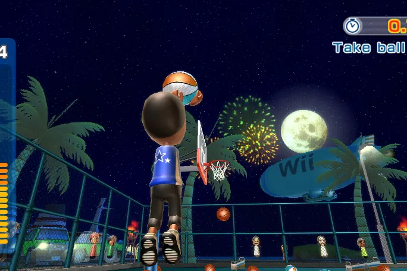

Case Study
Nintendo Hispanic Media Outreach
This multicultural earned media work focused on connecting a consumer gaming story with Hispanic audiences through culturally relevant outreach, entertainment media strategy, and audience-aware messaging.
The communications opportunity was to make the campaign feel accessible, fun, and relevant while helping media understand why the product mattered to families, young adults, and entertainment-focused consumers. The work required translating product features and campaign priorities into story angles that could resonate with Spanish-language, bilingual, and multicultural media outlets.
My role supported media strategy, message development, outreach planning, and coordination across consumer, multicultural, and entertainment communications priorities. The work demonstrated how earned media can broaden a campaign by meeting audiences through trusted cultural channels and relevant lifestyle storytelling.
This personal portfolio case study is presented for professional context only and is not an official Nintendo webpage.